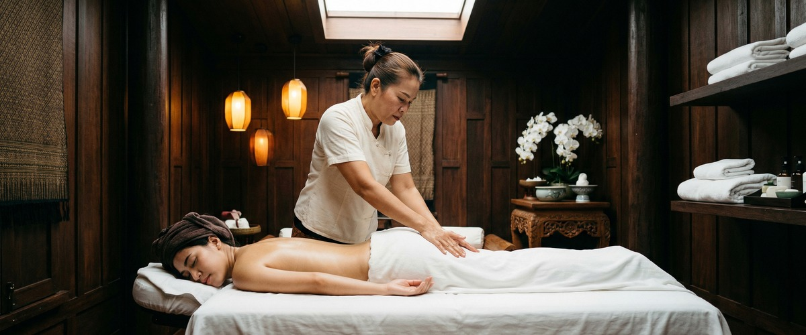
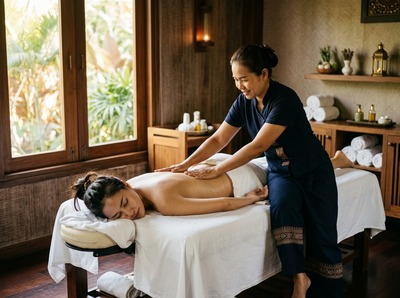

If turning your head is a daily battle, or lifting your arms above your shoulders feels like a reminder of everything your body has been carrying, you are not alone.

Stiff neck and shoulder tension is one of the most common complaints seen at Glasgow Thai Massage. It is rarely just about the muscles. Desk hours, stress, disturbed sleep, and poor posture all pile on top of each other.
Eventually, that familiar ache becomes your baseline. It does not have to stay that way.
Neck stiffness means pain or discomfort when you try to turn, move, or flex your neck. It usually comes from muscle strain, poor posture, or overuse of the neck muscles and surrounding soft tissue. The muscles most often involved are the trapezius, levator scapulae, and sternocleidomastoid.

When these tighten or go into spasm, they limit how freely you can move your neck and the top of your shoulders.
Common triggers include sleeping in an awkward position, long hours at a screen, and repeated overhead work. Emotional stress is another big one — it causes people to tighten their neck and shoulder muscles for hours without realising it. NHS Inform notes that neck pain can spread into the upper back and arms, making the problem wider than it first appears.
A systematic review published in Evidence-Based Complementary and Alternative Medicine found that massage gives real, measurable relief from neck and shoulder pain. Targeted manual therapy boosts blood flow, reduces muscle spasm, and triggers the release of endorphins that naturally ease pain signals.
Traditional Thai massage tackles stiff necks and shoulders in several ways. It uses acupressure along the energy lines of the upper body, assisted stretching to lengthen the trapezius and neck muscles, and firm pressure on trigger points that have become locked and tender.
This is not passive work. Your therapist moves your head, neck, and arms through guided ranges of motion. Many clients have not moved this freely in months.
For deeply embedded shoulder tension, Thai sports massage adds deeper friction work to break down the adhesions that keep muscles braced long after the original trigger has gone. Thai oil massage is a strong choice when the neck and shoulders are acutely sore. Heated oil warms and softens the tissue before any deeper work begins.
Ready to give your neck some proper attention? Book your session online and be with us within the week.
Every session targeting neck and shoulder stiffness starts with a short conversation. Maliwan and Jariya will ask where you are holding tension, what your day looks like, and how long you have had the problem. Both trained at the Wat Pho Thai Massage School in Bangkok.
They then work from the upper back upward, addressing the full chain of muscles involved — not just the site of the pain.
A 60-minute session at our studio on West Nile Street in Glasgow City Centre covers the upper trapezius, the base of the skull, the shoulder girdle, and the cervical spine. Both pressure and assisted movement are used throughout. Most clients notice more head rotation and a drop in that constant braced feeling by the end of the session.
People who sit for six or more hours a day at a screen are the most common profile. This includes many workers in offices around Blythswood Square, St Vincent Street, and the nearby financial district.
But stiff necks and tight shoulders also show up in tradespeople who carry heavy loads, new parents lifting and feeding babies in awkward positions, and drivers with their neck fixed forward for long stretches. Stress carriers of all kinds end up here too. If any of that sounds like you, book a treatment today and give your neck the attention it has been asking for.
In most cases, no. A skilled therapist will work within the range your neck is comfortable with and will not force restricted movement. If the stiffness has come on suddenly or is accompanied by fever, severe headache, or numbness down the arm, you should see a GP before booking a massage, as these can be signs of a condition requiring medical assessment.
Many clients notice a genuine improvement after a single session, particularly in how freely they can rotate their head. However, stiffness that has built up over months or years tends to return if the underlying habits do not change. A course of three to four sessions, ideally spaced a week or two apart, typically produces more lasting results than a one-off visit.
Both are effective, and the right choice depends on your symptoms. Traditional Thai massage is particularly useful when the stiffness involves restricted movement and whole-body tension, as it combines acupressure with assisted stretching to address the full musculoskeletal chain. Deep tissue work within Thai sports massage is better suited when there are specific tight bands or trigger points causing localised pain. At Glasgow Thai Massage, your therapist will advise on the most appropriate approach at the start of your session.
Yes, and this is one of the most underappreciated causes. When people are stressed or anxious, they commonly brace the trapezius and neck muscles without realising it. The pain only becomes obvious later.
Massage works on both the physical tension in the tissue and the stress response itself. It helps calm the nervous system and ease the guarded state that keeps muscles tight.
For common neck stiffness caused by posture, tension, or muscle overuse, massage is generally safe without a GP referral. If your pain followed an accident or whiplash injury, comes with tingling or weakness in the hands, or has not improved after a few weeks, it is worth getting a medical opinion first. This helps rule out cervical disc or nerve involvement.
At Glasgow Thai Massage, a focused neck and shoulder session typically forms part of a 60-minute full-body treatment, which allows the therapist to address the upper back and the wider muscular chain contributing to the stiffness. Standalone shorter sessions can also be arranged. A full hour gives the most thorough results for chronic tension.